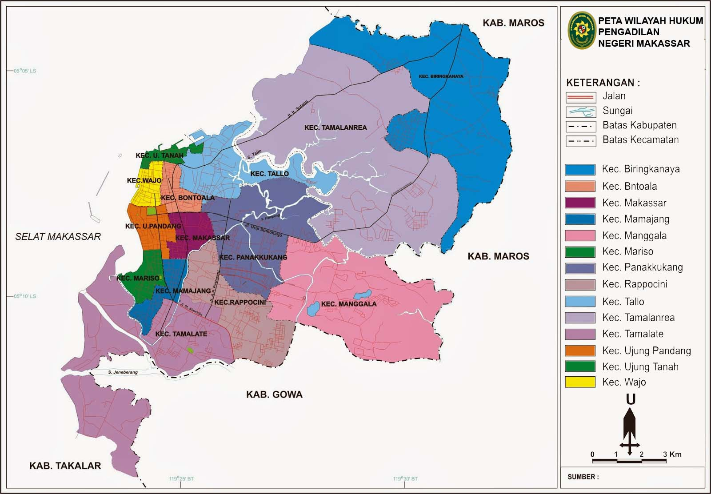

Sejarah

Secara etimologi, sebutan Makassar berasal dari kata "Mangkasarak" yang artinya mulia dan jujur. Konon nama
Makassar berasal dari sebuah peristiwa yang dianggap sangat sakral. Suatu pagi di tahun 1605 di tepi pantai
Tallo, Baginda Raja Tallo ke-VI kedatangan seorang lelaki berjubah putih dan besurban hijau.
Makassar memiliki moto unik, yakni "Sekali layar terkembang, pantang biduk surut ke pantai.” Itu diambil dari
kehidupan
nelayan yang berarti "Lebih memilih tenggelam di lautan daripada harus kembali lagi ke pantai tanpa hasil.”
Penduduk lokal menerjemahkannya sebagai kepribadian pantang mundur. Dalam kehidupan sosial, ini dapat
diartikan sebagai
ketika suatu keputusan telah diambil, seharusnya tak ada lagi keraguan.
Geografis
Makassar adalah Ibu Kota Provinsi Sulawesi Selatan, yang terletak di bagian Selatan Pulau Sulawesi yang
dahulu disebut
Ujung Pandang, terletak antara 119º24’17’38” Bujur Timur dan 5º8’6’19” Lintang Selatan yang berbatasan sebelah
Utara
dengan Kabupaten Maros, sebelah Timur Kabupaten Maros, sebelah selatan Kabupaten Gowa dan sebelah Barat adalah
Selat
Makassar. Kota Makassar memiliki topografi dengan kemiringan lahan 0-2°(datar) dan kemiringan lahan 3-15°
(bergelombang). Luas Wilayah Kota Makassar tercatat 175,77 km persegi.
Kota Makassar adalah kota yang terletak dekat dengan pantai yang membentang sepanjang koridor barat dan utara
dan juga
dikenal sebagai “Waterfront City” yang di dalamnya mengalir beberapa sungai seperti Sungai Tallo, Sungai
Jeneberang, dan
Sungai Pampang) yang kesemuanya bermuara ke dalam kota. Kota Makassar merupakan hamparan daratan rendah yang
berada pada
ketinggian antara 0-25 meter dari permukaan laut.
Batas Wilayah

Letak Kota Makassar adalah di bagian selatan dari Pulau Sulawesi. Perkembangan wilayah Kota Makassar
dimulai di
sepanjang pesisir pantai yang berada di antara dua sungai besar, yaitu sungai Jeneberang dan sungai Tallo.
Perbatasan
Makassar bagian utara merupakan pedalaman yang didiami suku Bugis sedangkan perbatasan selatan didiami oleh
suku
Makassar. Perkembangan kota Makassar sebagai kota perdagangan dan kota pelabuhan ditunjang oleh wilayah
utara. Wilayah
pedalaman membawa komoditas sumber daya alam ke Makassar untuk dijual ke pasar. Bagian barat dari kota
Makassar adalah
selat Makassar dan terdapat sejumlah pulau kecil. Pulau-pulau ini digunakan sebagai penunjang perkembangan
kota, yakni
sebagai pelindung dan memenuhi kebutuhan kota Makassar. Keberadaan pulau-pulau kecil digunakan sebagai
pencegah gangguan
badai dan ombak yang mengganggu perahu atau kapal-kapal yang melakukan perdagangan di pelabuhan Makassar.
Masyarakat
kota Makassar di pulau-pulau kecil ini sebagian besar dihuni oleh orang-orang suku Makassar yang mata
pencahariannya
berhubungan dengan laut.
Iklim
Kota Makassar memiliki kondisi iklim tropis yang bertipe iklim tropis muson (Am), hal tersebut ditandai
dengan
kontrasnya jumlah rata-rata curah hujan di musim penghujan dan musim kemarau. Musim hujan biasanya
berlangsung sejak
bulan November hingga bulan Maret dan musim kemarau berlangsung dari bulan Mei hingga bulan September.
Wilayah Kota
Makassar memiliki suhu udara rata-rata berkisar antara 26,°C sampai dengan 29 °C. Rata-rata curah hujan per
tahun di
wilayah ini berkisar antara 2700–3200 milimeter.
Transportasi
Laut
Pelabuhan Soekarno-Hatta Makassar Di Makassar, Soekarno-Hatta menjadi nama pelabuhan, khususnya pelabuhan
untuk kapal
penumpang dan terminal penumpang. Pelabuhan ini dikelola oleh PT Pelabuhan Indonesia IV (Pelindo IV).
Di area pelabuhan penumpang ini terdapat Masjid Babussalam. Masjid ini diresmikan Presiden Megawati,
berbarengan dengan
peresmian Terminal Petikemas Makassar, pada 21 Juli 2001. Sementara di kawasan ujung utara pelabuhan, atau
ujung jalan
Nusantara, terdapat awal Jalan Tol Reformasi (tol lingkar Makassar) yang menghubungkan kawasan pelabuhan
dengan pusat
kota. Jalan tol yang hanya sepanjang 3,1 km ini dikelola oleh PT Nusantara Infrastructure Tbk. Perusahaan
milik Bosowa
Group ini juga jadi pengelola jalan tol Bintaro-Bumi Serpong Damai (Jakarta/Tangerang).
Paotere adalah suatu pelabuhan perahu yang terletak di Kecamatan Ujung Tanah, Makassar. Pelabuhan yang
berjarak ± 5 km
(± 30 menit) dari pusat Kota Makassar ini merupakan salah satu pelabuhan rakyat warisan tempo doeloe yang
masih bertahan
dan merupakan bukti peninggalan Kerajaan Gowa dan Kerajaan Tallo sejak abad ke-14 sewaktu memberangkatkan
sekitar 200
armada Perahu Pinisi ke Malaka. Pelabuhan Paotere sekarang ini masih dipakai sebagai pelabuhan perahu-perahu
rakyat
seperti Pinisi dan Lambo dan juga menjadi pusat niaga nelayan.
Udara
Kota Makassar mempunyai sebuah bandara internasional, Bandar Udara Internasional Sultan Hasanuddin yang
pada tanggal 26
September 2008 diresmikan oleh Presiden RI Susilo Bambang Yudhoyono yang menandakan mulai pada saat itu
Bandar Udara
Internasional Sultan Hasanuddin beroperasi secara penuh di mana sebelumnya telah beroperasi tetapi hanya
sebagian.
Bandara Hasanuddin juga memiliki taksi khusus Bandara dengan harga yang bervariasi sesuai dengan region dari
daerah yang
dituju serta shuttle bus khusus yang melayani jalur dari dan ke bandara baru. Bahkan banyak taksi-taksi yang
gelap yang
juga menawarkan jasa kepada penumpang yang baru tiba di Makassar. Pada tahun 2009 diharapkan landasan pacu
yang baru
telah rampung dan bisa digunakan.
Darat
Pete-pete adalah sebutan angkot di Makassar dan sekitarnya. Pete-pete merah adalah angkot yang berasal dari
Kabupaten
Gowa dan melayani pengangkutan antar kota, sedangkan pete-pete biru adalah angkot yang berasal dari Kota
Makassar itu
sendiri dan hanya melayani pengangkutan di wilayah Makassar saja.
- Bus
- Taksi
- Becak: Makassar terkenal dengan angkutan tradisional becak. Jumlahnya sendiri mencapai 1.500 unit.
Pemerintah setempat
memberlakukan becak untuk pariwisata dan khusus beroperasi di sekitar kawasan wisata saja. Tarifnya
tergantung
kesepakatan dengan pengayuh.
- Bentor: Populasi becak motor di Makassar mulai ramai dan secara perlahan menggantikan becak. Bagian
depan bentor adalah
becak dan di belakangnya adalah motor.
- Ojek
Wisata
Makassar modern memiliki banyak tempat wisata yang digunakan untuk keperluan hiburan masyarakat Makassar
maupun bagi
wisatawan yang berasal dari kota maupun negara lain.
Pantai Losari

Pantai Losari (Makassar: ᨄᨈᨕᨗ ᨒᨚᨔᨑᨗ) adalah sebuah pantai yang terletak di sebelah barat Kota Makassar,
Provinsi
Sulawesi Selatan, Indonesia. Pantai ini menjadi tempat bagi warga Makassar untuk menghabiskan waktu pada
pagi, sore, dan
malam hari menikmati pemandangan matahari tenggelam yang sangat indah.[1] Jarak Pantai Losari dari Bandar
Udara
Internasional Sultan Hasanuddin kurang lebih 20 kilometer memakan waktu sekitar 30 menit jika melalui Jalan
Tol Insinyur
Sutami.
Fort Rotterdam

Fort Rotterdam, merupakan salah satu benteng di Sulawesi Selatan yang boleh dianggap megah dan menawan.
Benteng ini
merupakan peninggalan sejarah Kesultanan Gowa, Kesultanan ini pernah berjaya sekitar abad ke-17 dengan ibu
kota
Makassar. Kesultanan ini sebenarnya memiliki 17 buah benteng yang mengitari seluruh ibu kota. Hanya saja,
Benteng Fort
Rotterdam merupakan benteng paling megah di antara benteng benteng lainnya dan keasliannya masih terpelihara
hingga
kini.
Trans Studio

Trans Studio merupakan jaringan taman bermain di dalam ruangan (Indoor Theme Park) terbesar di Indonesia
yang dikelola
oleh CT Corp. Di dalam taman bermain ini memiliki berbagai macam wahana dengan tema seperti program-program
acara yang
ada di Trans TV dan Trans7.